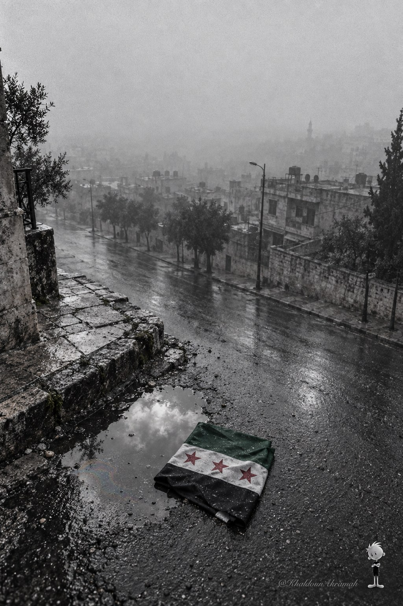
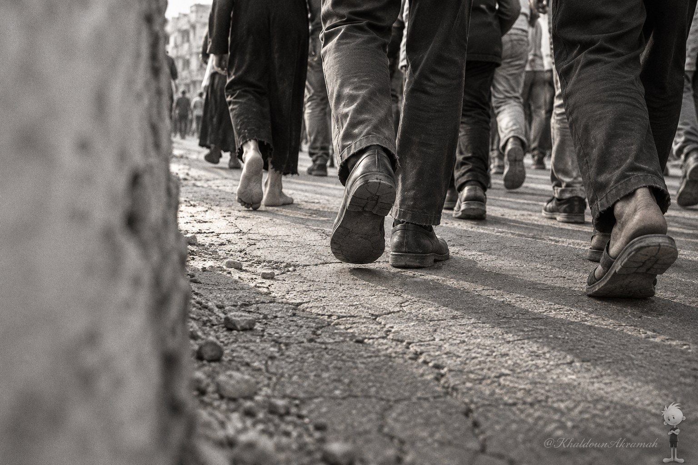
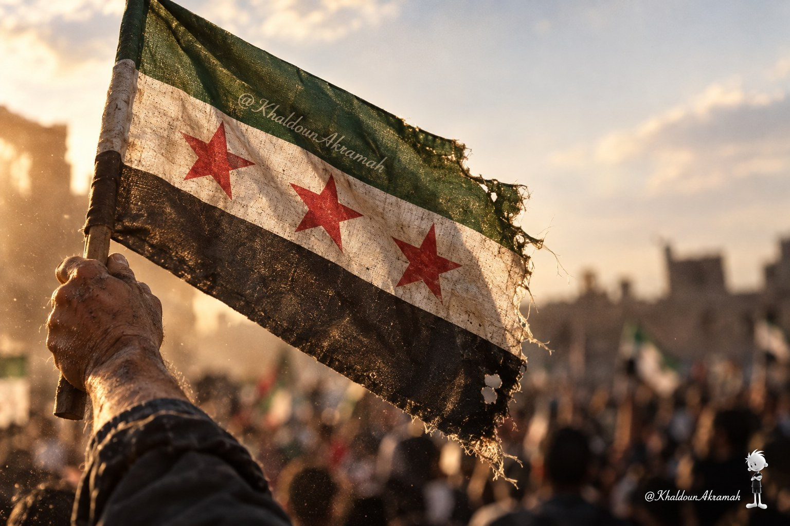
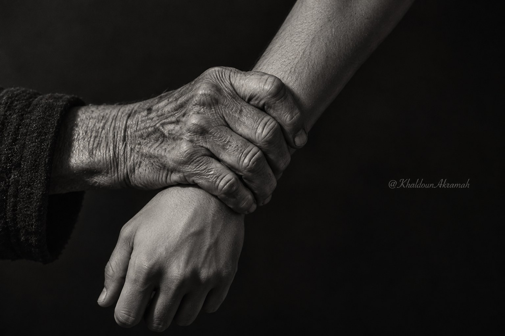

ثلاثاء الوفاء للشهداء
لم يسأل أحدهم عن نتيجة مضمونة. خرجوا من حمص — عاصمة الثورة — وهم يعلمون ما في الجوّ. الأقدام على الإسفلت كانت أوضح بيانٍ عرفه التاريخ: قرارٌ بلا تراجع، وخطوةٌ في اتجاه واحد.
«تلك اللحظات لم تكن مجرد احتجاجات، بل كانت إعلاناً صريحاً بأن الشعب السوري قد كسر أغلال العبودية وإلى الأبد.»
من درعا شرارةً إلى حمص قلباً، انتشرت المسيرة كما ينتشر الضوء في غرفة مظلمة — لا يسأل أحدٌ عن إذن. كانت سوريا تقرّر بصمت الأقدام ما أعجزه صوت السلاح.


رفعوا علم الثورة السورية — الأخضر والأبيض والأسود مع نجوماتٍ حمراء ثلاث — وهم يعلمون أن الرفع يُكلَّف. القماش ممزّق من طرفٍ واحد، والغبار عليه لم يمنعه من أن يكون الشيء الأشدّ وضوحاً في الإطار.
لم يكن في تلك اليد ما يحميها. لم يكن معها سند سوى أن ما تفعله هو الصواب. رصاص الغدر أُطلق — والأيدي لم تنزل.
«رصاص الغدر أُطلق — والأيدي لم تنزل.»
الطاغية يفهم كثيراً من الأشياء — يفهم السجن، ويفهم الرصاص، ويفهم الخوف. ما لم يفهمه، ولم يُعلَّم إياه في علم الاستبداد، هو أن ثمة قيوداً لا تُعاد تركيبها متى كُسرت مرة. الإنسان الذي يخرج مرة أمام الرصاص ويعود — لا يعود كما كان.
السادس من أيلول كان ذلك الكسر. ليس احتجاجاً — بل تحوّلاً في مادة الشعب نفسه.
«الشعب السوري قد كسر أغلال العبودية وإلى الأبد.»
خمسة عشر عاماً تفصل بين يدٍ رفعت العلم في الشارع ويدٍ تبني اليوم على ما رُسم بذلك الرفع. ليست فجوة — بل وراثة. الأبناء يعيشون في بلدٍ حكومته ثورة، وشوارعه تحمل آثار من سبقوا.

رسموا بدمائهم خارطة طريقنا نحو الحرية والكرامة.
اليوم، ونحن نعيش في ظل حكومة الثورة، نتذكر ونعاهد.
في الذكرى الخامسة عشرة لثلاثاء الوفاء، سجّل اسمك شاهداً على أن الذاكرة لا تُمحى، وأن الدم المراق كان ثمناً عادلاً للحرية التي نتنفّسها اليوم.